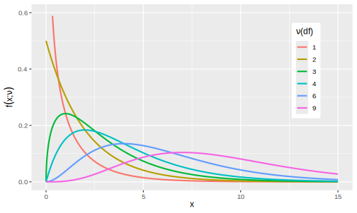
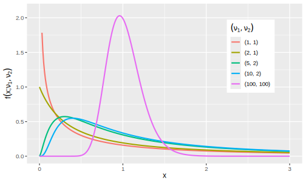

1 Sampling distributions
A statistic is a quantity that can be calculated from sample data. Before observing data, a statistic is an unknown quantity and is, therefore, a rv.
Definition 1.1 (Statistic) Let X_1, \dots, X_n be observable rvs and let g be an arbitrary real-valued function of n random variables. The rv T = g(X_1, \dots, X_n) is a statistic.
We refer to the probability distribution for a statistic as a sampling distribution. The sampling distribution illustrates how the statistic will vary across possible sample data. The sampling distribution contains information about the values a statistic is likely to assume and how likely it is to assume those values prior to observing data.
Definition 1.2 (Sampling distribution) Suppose rvs X_1, \dots, X_n are a random sample from F(\theta), a distribution depending a parameter \theta whose value is uknown. Let the rv T = g(X_1, \dots, X_n, \theta) be a function of X_1, \dots, X_n and (possibly) \theta. The distribution of T (given \theta) is the sampling distribution of T.
The sampling distribution of T is derived from the distribution of the random sample. Often we will be interested in a statistic T that is an estimator for a parameter \theta (that is, T will not depend on \theta).
In what follows, we review several special families of distributions that are widely used in probability and statistics. These special families of distributions will be indexed by one or parameters.
1.1 Uniform distribution
The uniform distribution places equal on uniform weight on the items being sampled.
Definition 1.3 (Uniform distribution) A continuous rv X has a uniform distribution on [a,b] with a<b, if X has pdf f(x; a,b) = \frac{1}{b-a}\,, \quad a < x < b\,, or zero otherwise. We write X \sim \mathsf{Unif}(a,b).
Parameters
Note that a and b are parameters in Definition 1.3.
Exercise 1.1 As an exercise, derive the cdf using the definition. Derive a formula for the mean and variance in terms of the parameters a and b.
1.2 Normal distribution
Normal distributions play an important role in probability and statistics as they describe many natural phenomena. For instance, the Central Limit Theorem tells us that the sample mean of a large random sample (size m) of rvs with mean \mu and variance \sigma^2 is approximately normal in distribution with mean \mu and variance \sigma^2/m.
Definition 1.4 (Normal or Gaussian distribution) A continuous rv X has a normal distribution with parameters \mu and \sigma^2, where -\infty < \mu < \infty and \sigma > 0, if X has pdf f(x; \mu, \sigma) = \frac{1}{\sqrt{2 \pi} \sigma}e^{-(x-\mu)^2/(2\sigma^2)}\,, \quad -\infty < x < \infty \,. We write X \sim \mathsf{N}(\mu, \sigma^2).
For X\sim \mathsf{N}(\mu,\sigma^2), it can be shown that \mathbf{E}(X) = \mu and \mathop{\mathrm{Var}}(X) = \sigma^2, that is, \mu is the mean and \sigma^2 is the variance of X. The pdf forms a bell-shaped curve that is symmetric about \mu, as illustrated in Figure 1.1. The value \sigma (standard deviation) is the distance from \mu to the inflection points of the curve. As \sigma increases, the dispersion in the density increases, as illustrated in Figure 1.2. Thus, the distribution’s position (location) and spread depend on \mu and \sigma.
Definition 1.5 (Standard normal distribution) We say that X has a standard normal distribution if \mu=0 and \sigma = 1 and we will usually denote standard normal rvs by Z \sim \mathsf{N}(0,1) (why Z? tradition!1). We denote the cdf of the standard normal by \Phi(z) = P(Z \leq z) and write \varphi = \Phi' for its density function.
Useful facts about normal variates
- If X \sim \mathsf{N}(\mu, \sigma^2), then Z = (X - \mu) / \sigma \sim \mathsf{N}(0,1).
- If Z \sim \mathsf{N}(0, 1), then X = \mu + \sigma Z \sim \mathsf{N}(\mu, \sigma^2).
- If X_i \sim \mathsf{N}(\mu_i, \sigma_i^2) for i = 1, \dots, n are independent rvs, then \sum_{i=1}^{n} X_i \sim \mathsf{N} \left( \sum_{i=1}^{n} \mu_i, \sum_{i=1}^{n} \sigma_i^2 \right) \,.
Variances add
In particular, for differences of independent rvs X_1 \sim \mathsf{N}(\mu_1, \sigma_1^2) and X_2 \sim \mathsf{N}(\mu_2, \sigma_2^2) then the variances add: X_1 - X_2 \sim \mathsf{N}(\mu_1 - \mu_2, \sigma_1^2 + \sigma_2^2) \,.
Probabilities P(a \leq X \leq b) are found by converting the problem in X \sim \mathsf{N}(\mu, \sigma^2) to the standard normal distribution Z \sim \mathsf{N}(0, 1) whose probability values \Phi(z) = P(Z\leq z) can then be looked up in a table. From (1.) above, \begin{aligned} P(a < X < b) &= P\left( \frac{a-\mu}{\sigma} < Z < \frac{b-\mu}{\sigma} \right) \\ &= \Phi \left( \frac{b-\mu}{\sigma}\right) - \Phi\left(\frac{a-\mu}{\sigma}\right) \,. \end{aligned} This process is often referred to as standardising (the normal rv).
Example 1.1 Let X \sim \mathsf{N}(5, 9) and find P(X \geq 5.5).
\begin{aligned} P(X \geq 5.5) &= P\left(Z \geq \frac{5.5 - 5}{3}\right) \\ &= P(Z \geq 0.1667) \\ &= 1 - P(Z \leq 0.1667) \\ &= 1 - \Phi(0.1667) \\ &= 1 - 0.5662 \\ &= 0.4338\,, \end{aligned} where we look up the value of \Phi(z) = P(Z\leq z) in a table of standard normal curve areas.
The probability corresponds to the shaded area under the normal density \varphi(x) = \Phi'(x) corresponding to x \geq 5.5 (see Figure 1.3). To calculate this area, we can also use the R code: pnorm(5.5, mean = 5, sd = 3, lower.tail = FALSE).
Example 1.2 Let X \sim \mathsf{N}(5, 9) and find P(4 \leq X \leq 5.25).
\begin{aligned} P(4 \leq X \leq 5.25) &= P\left(\frac{4-5}{3} \leq Z \leq \frac{5.25-5}{3}\right) \\ &= P(-0.3333 \leq Z \leq 0.0833) \\ &= \Phi(0.0833) - \Phi(-0.3333) \\ &= 0.5332 - 0.3694 \\ &= 0.1638\,. \end{aligned} where we look up the value of \Phi(z) = P(Z\leq z) in a table of standard normal curve areas.
The probability corresponds to the shaded area under the normal density \varphi(x) = \Phi'(x) corresponding to 4 \leq x \leq 5.25 (see Figure 1.4). To calculate this area, we can use the R code: pnorm(5.25, mean = 5, sd = 3) - pnorm(4, mean = 5, sd = 3).
Empirical rule (68-95-99.7 rule)
For samples from a normal distribution, the percentage of values that lie within one, two, and three standard deviations of the mean are 68.27\%, 95.45\%, and 99.73\%, respectively. That is, for X \sim \mathsf{N}(\mu, \sigma^2), P(\mu - 1 \sigma \leq X \leq \mu + 1 \sigma ) \approx 0.6827\,, P(\mu - 2 \sigma \leq X \leq \mu + 2 \sigma ) \approx 0.9545\,, P(\mu - 3 \sigma \leq X \leq \mu + 3 \sigma ) \approx 0.9973\,. For a normal population, nearly all the values lie within “three sigmas” of the mean.
1.3 Student’s \mathsf{t} distribution
Student’s \mathsf{t} distribution gets its peculiar name as it was first published under the pseudonym “Student”.2 This bit of obfuscation was to protect the identity of his employer,3 and thereby vital trade secrets, in a highly competitive and lucrative industry.
Definition 1.6 (Student’s \mathsf{t} distribution) A continuous rv X has a \mathsf{t} distribution with parameter \nu > 0, if X has pdf f(x; \nu) = \frac{\Gamma\left(\tfrac{\nu+1}{2}\right)}{\sqrt{\nu \pi} \Gamma \left(\tfrac{\nu}{2}\right)} \left( 1 + \tfrac{x^2}{\nu} \right)^{- \frac{\nu+1}{2}} \,, \quad -\infty < x < \infty\,. We write X \sim \mathsf{t}(\nu). Note \Gamma is the standard gamma function.4
The density for \mathsf{t}(\nu) for several values of \nu are plotted below in Figure 1.5.
Properties of \mathsf{t} distributions
- The density for \mathsf{t}(\nu) is a bell-shaped curve centred at 0.
- The density for \mathsf{t}(\nu) is more spread out than the standard normal density (i.e., it has “fatter tails” than the normal).
- As \nu \to \infty, the spread of the corresponding \mathsf{t}(\nu) density converges to the standard normal density (i.e., the spread of the \mathsf{t}(\nu) density decreases relative to the standard normal).
If X \sim \mathsf{t}(\nu), then \mathbf{E}[X] = 0 for \nu > 1 (otherwise the mean is undefined).
Cauchy distribution
A \mathsf{t} distributions with \nu = 1 has pdf f(x) = \frac{1}{\pi (1 + x^2)}\,, and we call this the Cauchy distribution.
1.4 \chi^2 distribution
The \chi^2 distribution arises as the distribution of a sum of the squares of \nu independent standard normal rvs.
Definition 1.7 (\chi^2 distribution) A continuous rv X has a \chi^2 distribution with parameter \nu \in \mathbf{N}_{>}, if X has pdf \begin{equation*} f(x; \nu) = \frac{1}{2^{\nu/2} \Gamma(\nu/2)} x^{(\nu/2)-1} e^{-x/2} \,, \end{equation*} with support x \in (0, \infty) if \nu=1, otherwise x \in [0, \infty). We write X \sim \chi^2(\nu).
The pdf f(x; \nu) of the \chi^2(\nu) distribution depends on a positive integer \nu referred to as the df. The densities for several values of \nu are plotted below in Figure 1.6. The density f(x;\nu) is positively skewed, i.e., the right tail is longer, so the mass is concentrated to the figure’s left in Figure 1.6. The distribution becomes more symmetric as \nu increases. We denote critical values of the \chi^2(\nu) distribution by \chi^2_{\alpha, \nu}.

Skew
Unlike the normal and t distributions, the \chi^2 distribution is not symmetric! This means that critical values, e.g., \chi^2_{.99, \nu} \quad \text{and}\quad \chi^2_{0.01,\nu}\,, are not equal. Hence, it will be necessary to look up both values for CIs based on \chi^2 critical values.
If X \sim \chi^2(\nu), then \mathbf{E}[X] = \nu and \mathop{\mathrm{Var}}[X] = 2\nu.
1.5 \mathsf{F} distribution
The \mathsf{F} distribution (“F” for Fisher) arises as a test statistic when comparing population variances and in the analysis of variance (see @sec-anova).
Definition 1.8 (\mathsf{F} distribution) A continuous rv X has an \mathsf{F} distribution with df parameters \nu_1 and \nu_2, if X has pdf f(x; \nu_1, \nu_2) = \frac{\Gamma\left(\frac{\nu_1+\nu_2}{2}\right) \nu_1^{\nu_1/2} \nu_2^{\nu_2/2}} {\Gamma\left(\frac{\nu_1}{2}\right) \Gamma\left(\frac{\nu_2}{2}\right)} \frac{x^{\nu_1/2 - 1}}{(\nu_2+\nu_1 x)^{(\nu_1+\nu_2)/2}} \,.
The pdf f(x; \nu_1, \nu_2) of the \mathsf{F}(\nu_1, \nu_2) distribution depends on two positive integers \nu_1 and \nu_2 referred to, respectively, as the numerator and denominator df. The density is plotted below for several combinations of (\nu_1, \nu_2) in Figure 1.7.

Where do the terms numerator and denominator df come from?
The \mathsf{F} distribution is related to ratios of \chi^2 rvs, as captured in Theorem 1.1.
Theorem 1.1 (Ratio of \chi^2 rvs) If X_1 \sim \chi^2(\nu_1) and X_2 \sim \chi^2(\nu_2) are independent rvs, then the rv F = \frac{X_1 / \nu_1}{X_2 / \nu_2} \quad \sim \mathsf{F}(\nu_1,\nu_2)\,, that comprises the ratio of two \chi^2 rvs divided by their respective df has an \mathsf{F}(\nu_1, \nu_2) distribution.
“Traditions, traditions… Without our traditions, our lives would be as shaky as a fiddler on the roof!” [https://www.youtube.com/watch?v=gRdfX7ut8gw].↩︎
William Sealy Gosset (1876–1937) wrote under the pseudonym “Student” [https://mathshistory.st-andrews.ac.uk/Biographies/Gosset/].↩︎
Gosset invented the t-test to handle small samples for quality control in brewing, specifically for the Guinness brewery in Dublin [https://www.wikiwand.com/en/Guinness_Brewery].↩︎
The gamma function is defined by \Gamma(z) = \int_0^\infty x^{z-1}e^{-x} dx when the real part of z is positive. For any positive integer n, \Gamma(n) = (n-1)! and for half-integers \Gamma(\tfrac{1}{2} + n) = \frac{(2n)!}{4^n n!} \sqrt{\pi}.↩︎